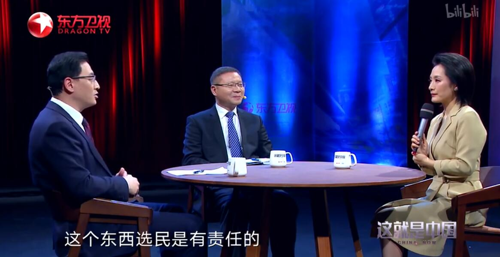
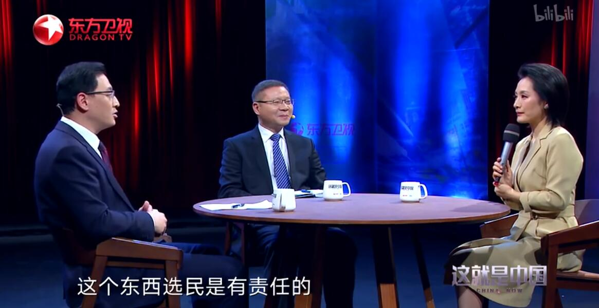

节目历史
节目背景
《这就是中国》希望把对世界风云敏锐且有见地的洞察，分享给年轻群体，并通过各种播出渠道的扩容，实现高度的内容触达率，让他们以更加理性的视角看待每天发生的国际事件 。
节目发展
2019年11月28日，由上海广播电视台主办的“东方卫视思想政论节目《这就是中国》专题研讨会”在北京举行 。 2021年6月7日起，每周一晚22:00《这就是中国》推出献礼中国共产党建党100周年系列特别节目“恰是百年风华” 。

节目背景
《这就是中国》希望把对世界风云敏锐且有见地的洞察，分享给年轻群体，并通过各种播出渠道的扩容，实现高度的内容触达率，让他们以更加理性的视角看待每天发生的国际事件 。
节目发展
2019年11月28日，由上海广播电视台主办的“东方卫视思想政论节目《这就是中国》专题研讨会”在北京举行 。 2021年6月7日起，每周一晚22:00《这就是中国》推出献礼中国共产党建党100周年系列特别节目“恰是百年风华” 。
